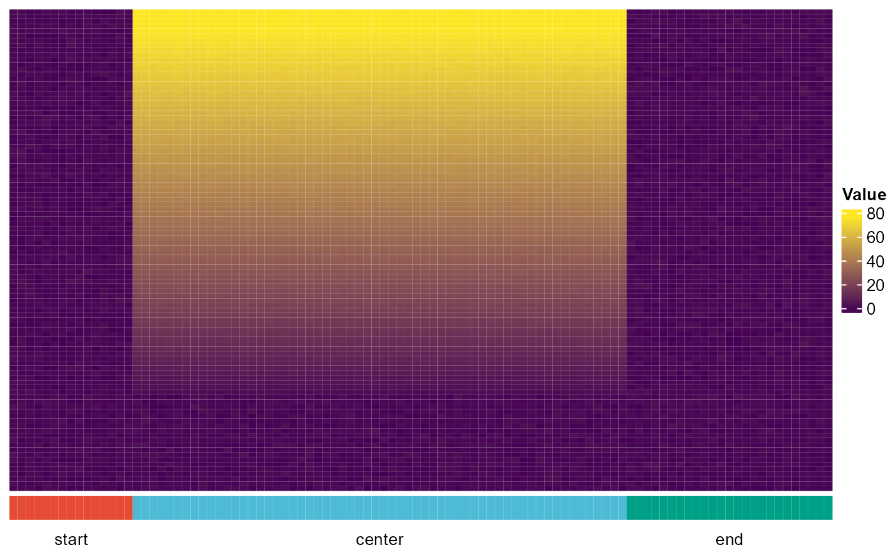
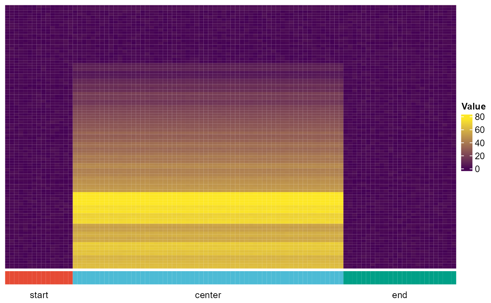

draw_matrix_heatmap.RdMake a complex heatmap with column annotations
draw_matrix_heatmap(
fullMatrix,
dataName = "geneData",
labels_col = NULL,
levels_col = NULL,
ranking = "Sum",
ranges = NULL,
verbose = FALSE
)a numeric matrix
the nature of the numeric data
a named vector for column annotation
factor levels for names of labels_col, specifying the order of labels_col
method for ranking the rows of the input matrix, options are c("Sum", "Max", "Hierarchical", "None")
a numeric vector with two elements, defining custom range for color ramp, default=NULL, i.e. the range is defined automatically based on the range of fullMatrix
logical, whether to output the input matrix for inspection
fullMatrix <- matrix(rnorm(10000), ncol=100)
for(i in 1:80){fullMatrix[i,16:75] <- runif(60) + i}
labels_col <- as.character(seq(1:100))
levels_col <- c("start", "center", "end")
names(labels_col) <- rep(levels_col, c(15, 60, 25))
draw_matrix_heatmap(fullMatrix, dataName="test", labels_col, levels_col)

draw_matrix_heatmap(fullMatrix, dataName="test", labels_col, levels_col,
ranking="Hierarchical")
